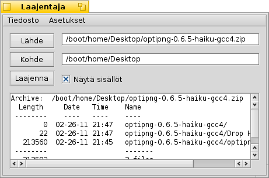

Suomi
Suomi Français
Français Deutsch
Deutsch Italiano
Italiano Русский
Русский Español
Español Svenska
Svenska 日本語
日本語 Українська
Українська 中文 ［中文］
中文 ［中文］ Português
Português Slovenčina
Slovenčina Magyar
Magyar Português (Brazil)
Português (Brazil) English
English Laajentaja
Laajentaja
| Työpöytäpalkki | Ei valikkoriviä, käynnistetään normaalisti kaksoisnapsauttamalla tuettua tiedostoa. | |
| Sijainti | /boot/system/apps/Expander | |
| Asetukset | ~/config/settings/Expander_Settings |
Laajentaja on pieni työkalu purkamaan nopeasti useimmat tavalliset arkistot, niiden joukossa zip, gzip, bzip2, rar ja tar.gz
Kaksoisnapsauta vain arkistoa nähdäksesi tämän yksinkertaisen käyttöliittymän:

| ALT O | avaa tiedostokyselyikkunan purettavan arkiston löytämiseksi. | |
| ALT D | avaa tiedostokyselyikkunan kohteen asettamiseksi. | |
| ALT E | aloittaa pakkauksen purkamisen. Se voidaan keskeyttää näppäimillä ALT K. |
Voit vaihtaa tiedostoluettelon näytön päälle ja pois päältä Näytä sisällöt-rastilla tai painamalla näppäimiä ALT L.
Laajentaja voi purkaa vain kokonaisia arkistoja.
Et voi valita yksittäisiä tiedostoja laajennettaviksi tai lisätä/poistaa tiedostoja arkistosta.
Et voi valita yksittäisiä tiedostoja laajennettaviksi tai lisätä/poistaa tiedostoja arkistosta.
tai ALT S avaa asetuspaneelin, joka tarjoaa joitakin hyödyllisiä asetuksia Laajentajan käyttäytymisen säätämiseksi.
Valitsimet ovat itsensäselittäviä: